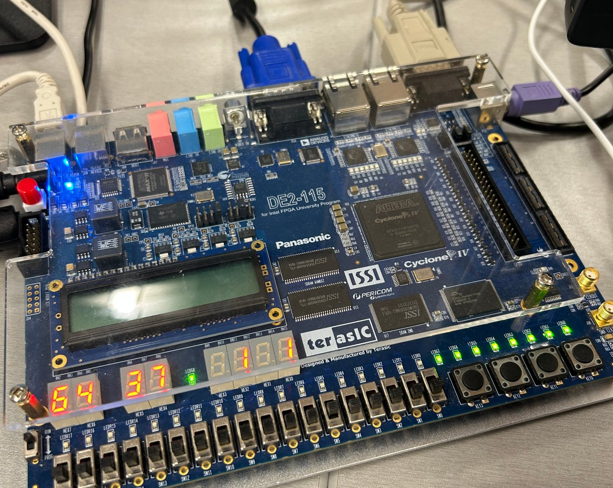
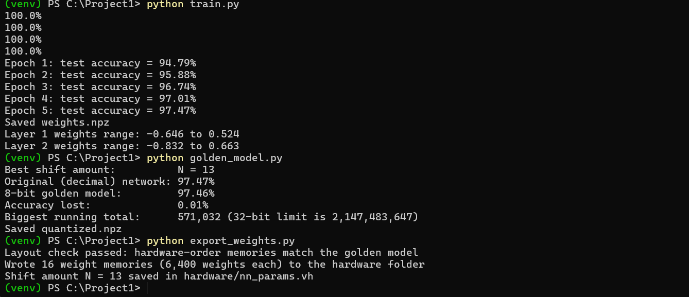
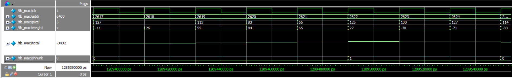
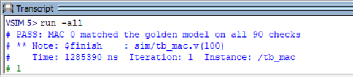
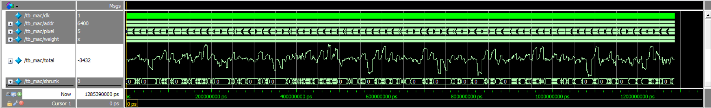
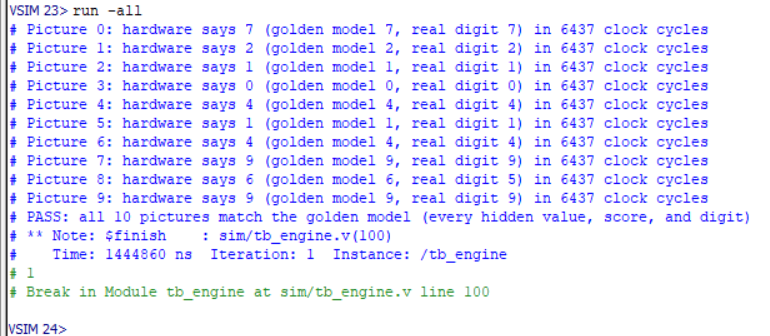
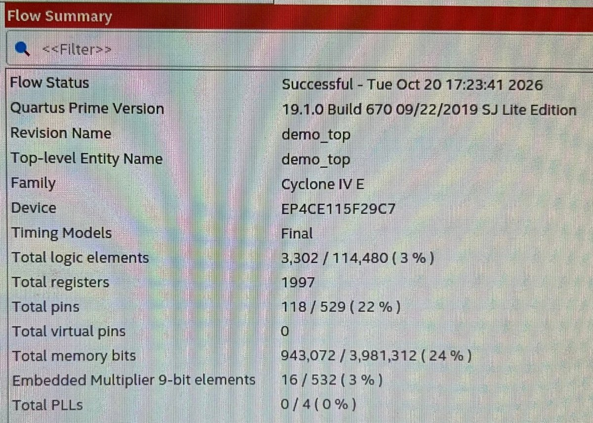
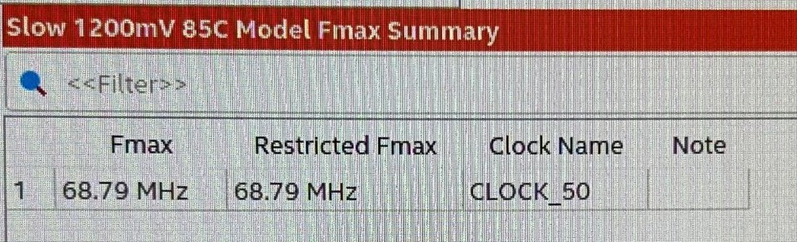

INT-8 FPGA Neural Network Accelerator
A custom 8-bit neural network engine in Verilog that recognizes handwritten digits on a DE2-115 FPGA board, matching its Python reference bit-for-bit and finishing each digit in 128.7 µs at 50 MHz.

Overview
I'm building a neural network accelerator from scratch: custom hardware, written in Verilog for an FPGA, that recognizes handwritten digits. A small network is trained in PyTorch, converted to 8-bit integers, and run on 16 multiply-accumulate (MAC) units working in parallel. In simulation, the hardware matches a Python reference model on every intermediate value and classifies each digit in 6,437 clock cycles. It now runs on a DE2-115 board, where a self-contained demo shows each test digit on a VGA monitor and the network's answer on the board's 7-segment displays.
Board Demo
The demo runs on the board by itself, with no computer attached: the 10 test pictures are stored on the chip. Each press of KEY1 shows the next picture on a VGA monitor, runs it through the network, and displays the guess (HEX0), the correct digit (HEX2), and the clock cycles it took (HEX7–HEX4). Green LEDs mean the guess is right, and red LEDs mean it's wrong.
Objective & Problem Statement
Problem
Almost all of a neural network's work is one operation repeated over and over: multiply two numbers and add the result to a running total. A regular processor does these one at a time using 32-bit floating-point math, which is slow and power-hungry. AI chips such as Google's TPU and the neural processors in phones speed this up by running many multiply-adds in parallel on small integers. I wanted to understand how that hardware works by building a small version of it myself.
Objective
Build an FPGA accelerator that classifies MNIST handwritten digits at 97% accuracy or better using only 8-bit integer math, takes under 1 ms per digit at the board's 50 MHz clock, and matches a software reference model bit-for-bit.
Requirements & Constraints
- Take a 28 × 28 grayscale image (784 pixels) and output the predicted digit, 0–9.
- Stay within 1% of the original floating-point model's accuracy.
- Match the Python golden model exactly at every layer, not just on the final answer.
- Classify a digit in under 1 ms at 50 MHz.
- Use integer math only (8-bit weights and activations, 32-bit running totals), with all of the roughly 102 KB of weights stored in the FPGA's on-chip memory.
Background
The network has two fully connected layers: 784 pixels feed 128 neurons, which feed 10 output neurons, one per digit. Each neuron multiplies every input by its own weight, adds up the results, and (in layer 1) applies ReLU, which turns negative totals into zero. The digit with the highest score wins.
Converting the trained weights from 32-bit floats to 8-bit integers, known as quantization, makes them 4× smaller and replaces expensive floating-point hardware with small integer multipliers, at almost no cost in accuracy.
Design & Architecture
The engine is built from 16 identical lanes. Each lane has its own weight memory, a MAC unit, and a shrink unit that turns the 32-bit total back into an 8-bit value. Every clock cycle, one input is sent to all 16 lanes at once, and each lane multiplies it by a weight from a different neuron, so 16 neurons are computed side by side.
Layer 1's 128 neurons take 8 rounds of 784 cycles. Their results go into a hidden buffer, and the same 16 lanes are reused for layer 2, reading from the hidden buffer instead of the image. A controller state machine steps through the rounds, and a final step picks the highest of the 10 scores.
Key design decisions
| Decision | Options considered | Choice & reasoning |
|---|---|---|
| Number format | 32-bit float, 16-bit fixed point, 8-bit integer | 8-bit integers from −127 to 127. Weights are 4× smaller and the multipliers are tiny, and accuracy dropped by only 0.01%. |
| Shrinking values between layers | Multiply by a scale factor, or shift right by a power of two | ReLU, then shift right by N bits, then cap at 127. A shift costs nothing in hardware (it's just wiring). N = 13 was picked automatically in Python. |
| Amount of parallelism | 1 MAC, 16 MACs reused over 8 rounds, or 128 MACs (one per neuron) | 16 MACs. About 16× fewer cycles than a single MAC, while keeping the design small. The MAC count is a parameter, so 8 and 32 can be compared later. |
| Weight storage | External SDRAM, or on-chip memory | One on-chip memory per lane (6,400 weights each), so all 16 lanes can read a weight every cycle without waiting on each other. |
| Biases | Keep biases, or train without them | Trained without biases. It keeps the hardware simpler, and the network still reached 97.47%. |
| Verification | Check only the final digit, or every intermediate value | Every intermediate value. A wrong design can land on the right digit by luck, and per-layer checks show exactly where a bug is. |
Implementation
Software: training, quantization, and the golden model
- Training (PyTorch). A 784 → 128 → 10 network trained for 5 epochs reached 97.47% on the 10,000 MNIST test images.
- Quantization (NumPy). Each layer's weights are scaled so the largest becomes ±127, then rounded. Pixels are shifted from 0–255 down to 0–127 so every input fits in a signed 8-bit number.
- Golden model. An integer-only Python version of the network does exactly the math the hardware does. A sweep picked the shift amount (N = 13) using training images, keeping the test score fair. It scores 97.46%.
- Weight export. A script writes 16 memory files in the exact order each lane reads them, then replays the hardware's read pattern in Python to confirm the layout before any Verilog runs.

Hardware: Verilog
- Weight ROM: on-chip memory loaded from the exported files. Like real FPGA memory, it returns data one clock cycle after it's asked.
- MAC: multiplies a signed 8-bit input by a signed 8-bit weight and adds it to a 32-bit running total. The largest total seen was 571,032, far below the 32-bit limit.
- Shrink: ReLU, a right shift by 13, and a cap at 127. It has no clock, so its output updates as soon as the total changes.
- Engine: the image buffer, 16 lanes, hidden buffer, controller state machine, pick-biggest step, and a cycle counter.
- Board demo: on-chip memory holding the 10 test pictures, a controller that copies one into the engine on each button press, a 640 × 480 VGA display that draws the picture 16× larger, and drivers for the 7-segment displays and LEDs.
// MAC: one multiply-add per clock cycle
always @(posedge clk)
if (clear) total <= 0;
else if (enable) total <= total + pixel * weight;
// Shrink: ReLU, divide by 2^13, cap at 127
wire [31:0] relu = total[31] ? 32'd0 : total;
wire [31:0] shifted = relu >> SHIFT_N;
assign out = (shifted > 127) ? 8'd127 : shifted[7:0];
Testing & Validation
The golden model acts as an answer key. For 10 MNIST test images, it records every value the hardware should produce: all 128 layer-1 outputs, all 10 scores, and the final digit. Each Verilog testbench feeds the same images into the design in ModelSim and compares every number, so a mismatch points straight to the layer and round where it happened.
- Weight layout check (Python): replays the hardware's read order over the exported memory files and matches the golden model.
- Single-lane test: one MAC, its weight memory, and the shrink unit, checked on its 8 neurons and 1 digit score for every image. All 90 checks passed.
- Full-engine test: all 1,280 hidden values, 100 scores, and 10 digits match the golden model (Figure 6).
- On the board: the on-chip counter shows 6,437 clock cycles per digit, the same as in simulation.



Results
The accelerator meets every target so far. The 8-bit design keeps the float model's accuracy, 16 MACs cut the cycle count about 16× compared with a single MAC, and it matches the golden model on every value checked. On the board, it uses only 3% of the chip's logic and 24% of its memory, and Quartus's timing analysis shows it could run at up to 68.79 MHz, about 38% faster than the board's 50 MHz clock.
| Metric | Baseline | Result | Target |
|---|---|---|---|
| Test accuracy (10,000 MNIST images) | 97.47% (32-bit float model) | 97.46% (8-bit integer model) | Within 1% of float |
| Weight storage | ≈ 407 KB (32-bit floats) | ≈ 102 KB (8-bit integers) | Fits in on-chip memory |
| Clock cycles per digit | ≈ 102,000 with 1 MAC (calculated) | 6,437 with 16 MACs (simulated, and confirmed on the board) | — |
| Time per digit at 50 MHz | ≈ 2.04 ms with 1 MAC | 128.7 µs | Under 1 ms |
| Match with Python reference | — | 1,390 of 1,390 values (10 images) | 100% |
| FPGA logic used | — | 3,302 of 114,480 logic elements (3%) | Fits on the chip |
| On-chip memory used | — | 943,072 of 3,981,312 bits (24%) | Fits on the chip |
| Hardware multipliers used | — | 16 of 532 (one per lane) | — |
| Maximum clock speed | 50 MHz (board clock) | 68.79 MHz (Quartus, worst-case model) | At least 50 MHz |


Challenges & Lessons Learned
- Memory timing. On-chip memory returns data one clock cycle after it's asked, so a pixel sent in the same cycle as its weight's address would be paired with the wrong weight. I gave the image buffer the same one-cycle delay as the weight memories and delayed the MAC's "add now" signal by one cycle, so every pixel and weight arrive together.
- Getting 16 memories in the right order. Each lane needs its weights in exactly the order the controller reads them, and a mistake here produces garbage that's hard to trace. Generating the files in Python and replaying the hardware's read pattern there caught layout problems before any Verilog ran.
- Choosing the shift amount. Too small a shift makes values pile up at the 127 cap, and too large makes them round to zero. Sweeping N from 0 to 19 on training images found the best value (13), without tuning on the test set.
- Compare against the model, not the label. The network misreads test image 8 (a 5 that looks like a 6), and the hardware gives the same wrong answer. Because the tests compare against the golden model rather than the true digit, that counts as a pass, and it's strong evidence the hardware copies the model's math exactly.
- Build small, then scale. Testing a single lane before building all 16 confirmed the timing in a design small enough to debug easily, and the full engine passed on its first run.
Future Work
- Stream all 10,000 MNIST test images to the board from a laptop over a UART link, and confirm every answer matches the golden model.
- Measure the real compute time with an Analog Discovery 3 logic analyzer on the engine's busy signal (already wired to a GPIO pin), and compare it with the time spent sending each image.
- Compare speed and chip area for 8, 16, and 32 MACs.
- Stretch goals: a 2D systolic array, adding biases back, or a small convolutional network.